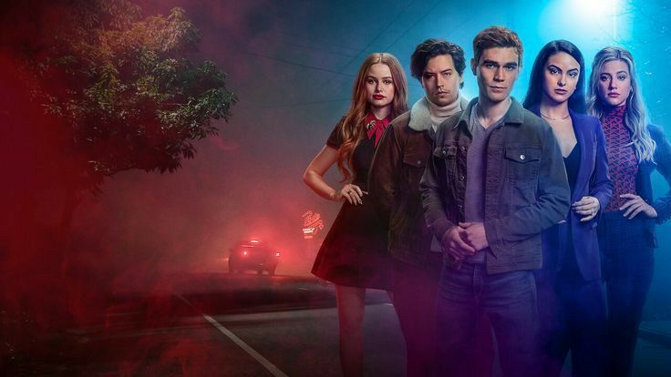

O que é Riverdale?

Riverdale é uma série de televisão americana de drama e mistério, baseada nos personagens da Archie Comics. Criada por Roberto Aguirre-Sacasa e estreada em 26 de janeiro de 2017, a série é transmitida pela emissora The CW. Riverdale reimagina os personagens clássicos das histórias em quadrinhos Archie, colocando-os em um contexto mais sombrio e misterioso, onde segredos, crimes e intrigas são partes centrais da narrativa.
Sinopse
A trama de Riverdale começa com a morte misteriosa de Jason Blossom, um jovem popular da cidade. Esse evento serve como ponto de partida para revelar os segredos ocultos dos residentes da pequena cidade de Riverdale. O protagonista, Archie Andrews, e seus amigos Betty Cooper, Veronica Lodge, Jughead Jones, e outros personagens icônicos, se envolvem em uma série de investigações e confrontos enquanto lidam com dramas pessoais e familiares.
Conforme a série avança, Riverdale explora temas como amor, amizade, traição, identidade e a luta contra as trevas que se escondem sob a superfície aparentemente tranquila da cidade. O tom sombrio e misterioso, aliado a reviravoltas inesperadas, torna a série envolvente e imprevisível.
Curiosidades sobre "Riverdale"
- Origem dos Personagens: Os personagens de "Riverdale" são baseados em quadrinhos que datam de 1941. Archie, Betty, Veronica, Jughead e outros têm sido parte da cultura pop americana por décadas antes de serem trazidos para a televisão.
- Escolha do Elenco: O elenco principal foi cuidadosamente escolhido para refletir tanto a aparência quanto a essência dos personagens dos quadrinhos. KJ Apa (Archie Andrews), Lili Reinhart (Betty Cooper), Camila Mendes (Veronica Lodge), e Cole Sprouse (Jughead Jones) rapidamente se tornaram favoritos dos fãs.
- Influências: A série é fortemente influenciada por filmes e programas de TV dos anos 90 e início dos anos 2000, como "Twin Peaks", "The X-Files", e "Dawson's Creek". O próprio Roberto Aguirre-Sacasa mencionou que "Twin Peaks" foi uma grande inspiração para o clima misterioso da série.
- Cole Sprouse como Narrador: Além de interpretar Jughead, Cole Sprouse atua como o narrador da série. A narração de Jughead é uma característica importante, dando um tom noir e uma visão introspectiva sobre os acontecimentos de Riverdale.
- Diversidade e Inclusão: A série é elogiada por sua abordagem inclusiva, representando diversidade racial, sexual e de gênero. Personagens como Kevin Keller, Cheryl Blossom e Toni Topaz ajudam a trazer diferentes perspectivas para a narrativa.
- Spin-offs: O sucesso de Riverdale levou à criação de spin-offs, como "Katy Keene", que segue as aventuras da personagem Katy, e "Chilling Adventures of Sabrina", que compartilha o mesmo universo.
- Morte de Luke Perry: Um dos momentos mais emocionantes e impactantes da série foi a morte do ator Luke Perry, que interpretava Fred Andrews, o pai de Archie. A série homenageou o ator com um episódio tocante, reconhecendo sua importância tanto na trama quanto para o elenco e fãs.
- Ambientação e Locais de Filmagem: Embora a história se passe em uma cidade fictícia, a maior parte das filmagens ocorre em Vancouver, no Canadá. A estética visual de Riverdale, com seus tons sombrios e cenários nostálgicos, contribui para a atmosfera única da série.
- Trilha Sonora: A música desempenha um papel fundamental em Riverdale. A série é conhecida por sua trilha sonora diversificada, que inclui desde músicas pop contemporâneas até covers feitos pelo próprio elenco, como o famoso cover de "Mad World" por Archie e Veronica.
- Impacto Cultural: Riverdale rapidamente se tornou um fenômeno cultural, inspirando moda, memes e discussões em redes sociais. O visual característico dos personagens e o estilo narrativo da série influenciaram outras produções de televisão e cinema.